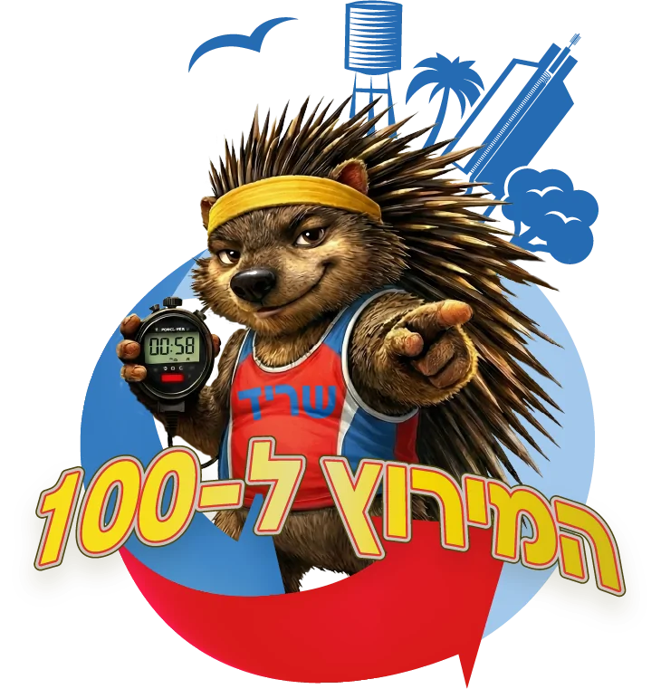

לכבוד מאה שנה לקיבוץ שריד יצאו הצוותים למירוץ חוצה קיבוץ: מהזינוק, דרך הרפת, חדר האוכל, הגורן וקיר הטיפוס, ועד שטיח הסיום. 12 משימות בשני חלקים, שמחברות בין ההיסטוריה של הקיבוץ להווה שלו, עם הרבה צחוק, זיעה ורוח צוות. כאן אפשר לצפות בכל רגעי המירוץ.
הסרטונים יעלו בקרוב